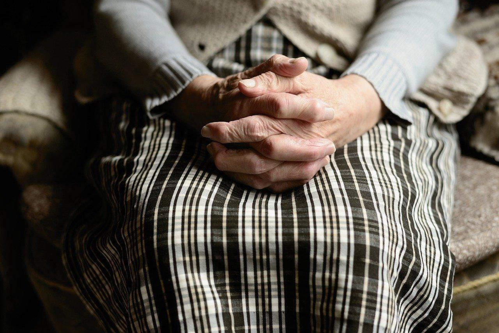

Welcome to Выплаты от государства
Компенсационные выплаты от государства: что это такое
2020.11.24 18:32
list-name.ru list-name.ru
База знаний ИТ Операторы связи Телефоны Письма СМС Вопрос-ответ Главная » База знаний » Компенсационные выплаты от государства: что это такоеКомпенсационные выплаты от государства: что это такое
876 Просмотры
Компенсационные выплаты – это помощь гражданам РФ, оказавшимся в трудной жизненной ситуации.
Что это?
Компенсационные выплаты гражданам РФ выделяются из государственного бюджета. Чтобы гражданин РФ получил компенсационную выплату, определяется вид возмещения и законодательные акты, по которым выделяются те или иные средства.
Компенсации можно разделить на две основные группы:
выплаты, относящиеся к области трудового права; социальные компенсации. В соответствии с законодательством получить компенсационные выплаты могут как нуждающиеся лица, так и те граждане, которые подверглись воздействию негативных условий, или вынуждены были переехать.Общая характеристика
Материальная поддержка со стороны государства, в отличие от других видов финансовой помощи гражданам, определяется условиями, в которых оказался человек. Главная задача – поддержка и содействие тем, кто приносит пользу обществу и незаменимым специалистам.
Условия выплаты:
Вид компенсации определяет источник финансирования; Компенсация назначается на законных основаниях конкретному гражданину; На решение по выплатам не влияет финансовое положение граждан, хотя в ряде случаев, указанных в законодательстве, возможны исключения; Компенсации выплачиваются в соответствии с законодательством гражданам РФ.Социальные выплаты
Социальные выплаты положены тем, кто находится в социально-опасном положении. Также материальную помощь получают граждане с инвалидностью или ухаживающие за людьми с ограниченными возможностями здоровья.
Кому положены
Работающие матери или законные представители ребёнка получают пособие в размере 50 руб. в соответствии с Указом Президента РФ № 1110 от 30.05.1994 г.
После того, как ребёнку исполняется 3 года, пособие по уходу за ребёнком не выплачивается.Компенсации также выплачиваются:
Студентам и аспирантам, если они взяли академ отпуск в соответствии с медицинским заключением о состоянии здоровья; Жёнам военнослужащих МЧС и МВД, которые проживают с мужьями в отдалённой местности, где нет возможности официально трудоустроиться; Пенсионерам и инвалидам (ежегодная единовременная выплата – 5 000 р.); Вынужденным переселенцам; Пострадавшим в техногенных авариях и радиационных катастрофах. Гражданин, оказавшийся в тяжёлой жизненной ситуации или утративший возможность трудиться и зарабатывать на достойную жизнь, должен помнить, что имеет законное право на компенсационные выплаты. Выплаты поможет получить Пенсионный фонд, местная администрация и органы соцзащиты населения. 2020-01-04 dk47139 (Пока оценок нет)Загрузка... Предыдущая Если ВАД это 315, то что такое 214: тест на АйКью След. Компенсационные выплаты с 2002 по 2018 год: что это такое, очередной развод или правда
Похожие статьи
«Платеж проверяется службой безопасности, это занимает до 48 часов» в Qiwi: что это и как долго ждать?
23.11.2020
«Прием платежей на счет запрещен» в Сбербанке: что это значит?
23.11.2020
Website Zenit Moscow RUS: что это такое и почему списали деньги?
13.11.2020
Недавние ТОП Коммент. ТегиUfiler: что это за программа на ПК и нужна ли она?
23.11.2020Пришла СМС об отложенном платеже с номера 315 на Теле2: что это такое?
23.11.2020«Платеж проверяется службой безопасности, это занимает до 48 часов» в Qiwi: что это и как долго ждать?
23.11.2020Федеральная служба возмещения платежей: что это, официальный сайт, отзывы
23.11.2020«Прием платежей на счет запрещен» в Сбербанке: что это значит?
23.11.2020Support wighe.com что это такое?
03.09.2019 18PL lovedateme KAZAN RUS сняли деньги: как вернуть?
24.08.2020 16CheckYour.name: что это за услуга, как отключить подписку?
20.09.2020 8Vaktor-lid@list.ru кто это? Что это? Мошенники или нет?
19.02.2019 6Mobpodrab.ru что это такое?
27.06.2019 5 Владислав: Добрый день. Уважаемый ВебМастер, напишите, пожалуйста, мне на почту. Есть интер... Валерия: Здравствуйте. Подскажите пожалуйста как можно вернуть деньги за вашу подписку ко... Андрей: верните деньги 200р , услугой не пользовались 8 9043197978... геннадий: не пользовался вашим сайтом верните 1470... Усон: Удалить номер?А какой номер?... sashaВопрос-ответ
Актерский состав сериала «Кровавая барыня»
26.10.2020Актерский состав фильма «Нереальная любовь»
12.10.2020Отзывы кинозрителей о сериале «Пациенты» (2008)
12.10.2020Содержание советского фильма «Белорусский вокзал» (1970)
23.09.2020Чем очистить шторы в домашних условиях?
30.08.2020Сейчас обсуждают
Владислав: Добрый день. Уважаемый ВебМастер, напишите, пожалуйста, мне на почту. Есть интер... Валерия: Здравствуйте. Подскажите пожалуйста как можно вернуть деньги за вашу подписку ко... Андрей: верните деньги 200р , услугой не пользовались 8 9043197978... геннадий: не пользовался вашим сайтом верните 1470... Усон: Удалить номер?А какой номер?...© 2017-2020 Все права защищены. При копировании материалов установка ссылки на сайт обязательна! Мы используем файлы "cookie", чтобы обеспечить максимальное удобство пользователям OK
